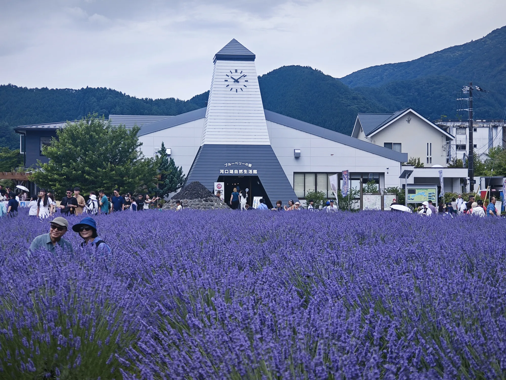

DAY 01
大阪
铁路抵达关西地区，经过大阪站与市区。

KANSAI, TOKYO & FUJI
从大阪、奈良与京都的古迹和街巷，转往东京、河口湖与湘南海岸。
从大阪、奈良与京都的古迹和街巷，转往东京、河口湖与湘南海岸。
THE JOURNEY
选择一天，联动地图与照片。
公共交通按线路或途经站点绘制，均为行程示意；未记下的具体班次留空。航班连线非实际飞行轨迹。
抵达关西地区，经过大阪站与市区。
登临大阪城，傍晚走过道顿堀与大阪市区。
从住吉大社的太鼓桥走到难波八阪神社，再逛新世界与通天阁，傍晚看大阪城市天际线。
鹿群、东大寺与春日大社，串起奈良的寺社和林间道路。
走入千本鸟居，傍晚来到鸭川与四条一带。
从东山街巷与清水寺到岚山河边，晚上经过东寺。
乘 Nozomi 到新横滨，转往横滨站后换京急到羽田 T2 接人，再搭京急到品川。
从新宿乘富士回游 15，经大月直通河口湖。
在大石公园看薰衣草、绣球与富士山，随后乘富士回游 36 返回新宿。
从涩谷街头登高看城市，在 SHIBUYA SKY 俯瞰交错的街道与东京天际线。
雨中到访浅草寺，之后继续在东京市内停留。
沿江之岛步行到海边，再来到镰仓高校前一带。
前往羽田机场，乘机返程。
MOMENTS TO KEEP
暂无照片。
NOTES FROM THE ROAD
KANSAI, TOKYO & FUJI
同样是现代化的都市，大阪给人带来的感觉却和东京完全不一样。
昨天有幸拜访了大阪城，一座见证了日本战国时代的兴亡的城堡。其中陈列的一系列画作与文书将四百多年前那场宏大的战争如此生动地呈现在我的眼前，使我能够一窥丰臣秀吉领导的一个辉煌而疯狂的时代。于是我也不禁期待后两天去京都游玩的时候，会不会再一次给我带来历史的震撼。
而大阪现代化的一面也是震撼我的另一方面。初到大阪时就曾在梅田复杂而曲折的地下迷宫中迷失了方向，难波和心斋桥的商业区也令我目不暇接。同样是繁华的商业区，大阪的城区更像是一座3D的迷宫，而不是简单地像上海那样平铺开来。身处其中，能深深地感受到商业的气息充斥这各个角落。
然而东京相比，大阪的商业分布却又截然不同。大阪的商业区像是杂糅在一起的：同一片区域内卖什么的都有，可以看见二次元和游戏周边，也能看见奢侈品和各种高端商业。而东京则更像是特化的商业区，每一片商业区都有独属于其自己的特色，或二次元，或年轻潮流文化。或许某种程度上大阪也有着和上海相似的一面。
除此之外，大阪人，或者说关西人的豪放与热情也打破了我对日本人拘谨的刻板印象。今天刚从通天阁下来，正打算拍拍通天阁的夜景视频，一家子大阪人走到了镜头里朝镜头招手。我看到了也对他笑了笑，于是他带着一种自豪的语气指着通天阁，向我说：“通天閣、最高!”还邀请我们留下他们的照片，称其为“Japan Memory”。虽然语言并不通，但从其中的语气和零散的几个单词也能听出他的热情随和。确实，这也成为了我在大阪难忘的回忆之一。
这几天在大阪的经历，使我得以亲身体会这座城市的独特魅力。繁华的外表、热情的内里、厚重的历史，无一不让我对这座城市留下了深刻的印象。
之前就听说过，如果想要看唐朝的建筑，最好的去处是奈良。于奈良的所见所闻确实也印证的这一点。
虽然奈良作为日本的首都只有短短八十年的历史。但在奈良时代派出的不计其数的遣唐使所带来的唐朝的文化技术在这片全新的土地上开花结果。东大寺代表的佛教文化和唐式建筑在这里得到了极大的保存。令人遗憾的是，中国长久以来的朝代更迭似乎并没有保留以往朝代建筑的习惯，以至于当时的建筑在国内几乎已经看不到了；但令人庆幸的是，在海的另外一边，盛唐时期的文化以另一种方式呈现在了我们眼前。
与东大寺相对的春日大社则是另外一种风貌。春日大社本是奈良时代建造，用以守护国家的神社。但直至今日，依旧在日本人心中享有极高的地位。从数百年前直至今日的捐赠者所捐赠的石灯一路护送着参拜者从山脚下走到大社。石灯数量之多令初到的我为之惊叹，也彰显了春日大社在日本人心目中的地位。
传说奈良时代之初，有匹神鹿护送神像降落于此，于是奈良人民将鹿视为神明使者看待。直至今日，奈良的各个角落依旧密布着鹿。千年以来，风云变幻，鹿默默地见证着迭起兴衰。而奈良，这位见证了日本千年历史的老者，也依旧在密林深处诉说着她的故事。
京都确实无愧于其古都的称呼。
即便身处京都的市中心，现代化的建筑中也不经意能发现旧时的踪迹：例如京都市中心的锦天满宫神社或是鸭川边上连片的传统町屋。这些传统的建筑无不暗示着这座城市过往的辉煌。漫步于其中，我总感觉穿越回中国了：沿河的成片低矮平房让我想起了典型的江南古镇，像是无锡的南长街或是苏州的平江路。它们大多依河而建，而且有着类似的建筑风格。这大抵也是当时中国文化输出的某种体现吧。
类似的感觉还有许多。参观日本的小神社时总给我一种苏州园林的感觉：曲曲折折、弯弯绕绕，把整个神社分割成好几个部分，在有限的面积内塑造出空间感；在清水寺音羽瀑布有幸听到了一位中国导游的介绍，据说三股泉水各自代表了祝福，喝下就可以得到庇佑。但如果三个同时喝则不会灵验，因为人不能贪婪。这一点似乎又和诸子百家的思想不谋而合，这大概也是中国文化在日本留下的某种印记吧。
或许我们也可以从中看到日本文化的内涵所在。某种意义上说，日本文化是海纳百川的结果：日本人从古至今似乎都一直在向当时世界最强的文明学习先进的文化和技术：无论是唐朝时期鼎盛的中华文明或是现如今的西方。但令人惊讶的是，日本在不断吸收外来文化的同时，也几乎没有丢掉自己的根。代表外来佛教文化的寺庙和本土神道教的神社，在这里达成了一种巧妙的平衡。外来文化不断与自己的本土文化共存、融合，形成了独特的日本文化。
于是想起鲁迅先生的《拿来主义》了。日本吸收外来文化的方式，似乎和鲁迅先生所主张的“拿来主义”有许多共通之处：在继承自己传统文化的优秀部分的同时，也同时吸收了世界各地的优秀文化为自己所用，形成一种自己独特的优秀而包容的文化。可能这也是日本留学的经历为鲁迅先生带来的一些灵感吧。
在伏见稻荷大社的千本鸟居，我们也可以看到日本文化的一些变化。千本鸟居保留着各种年代由各界人士捐赠的鸟居，上面附有署名、寄语和日期。有意思的是，这些文字的表述随着时间的推移有着不同的特点。明治至昭和年间，几乎所有的文字都会用汉字来表述，体现出当时汉字还是被日本人认为是比较正式的表达；而到了平成令和年间，片假名逐渐出现在了这些鸟居上，标志着来自西方的外来语逐渐进入了日本人的生活之中。比较有意思的一点是，对于外来语的片假名标注也日渐精准起来，从只使用原本日语中就有的发音演变为引入新的、本不存在于日语中的发音来表示外来语。例如从「チケット」到「ティー」，这似乎也是日本在学习西方文化上的一种新尝试。当然片假名滥用的现象也是这种照搬式学习的弊端之一，或许未来我们也有机会看到一个更好的解决方案。
虽然这两天只能造访京都极小的一片区域，但我们依旧能从京都的外表中一瞥日本文化的内核所在，也能窥见其他文化在日本土地上留下的痕迹。